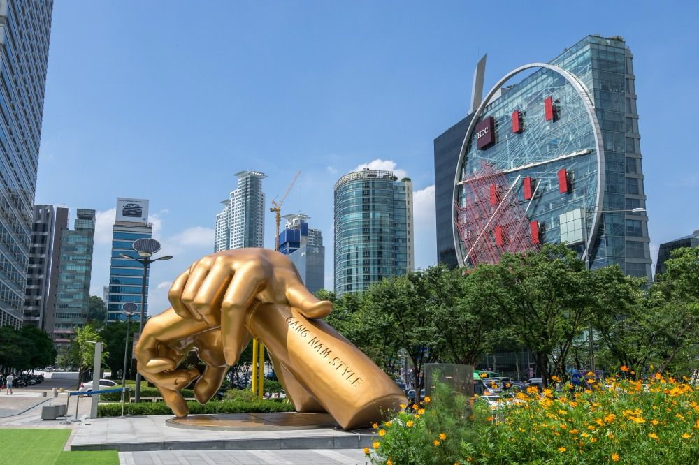

Le Palais Gyeongbokgung est l'un des palais royaux les plus emblématiques de Séoul, en Corée du Sud. Construit au XIVe siècle, il était le principal palais de la dynastie Joseon. Son architecture impressionnante, avec ses portes majestueuses et ses vastes cours, reflète le style traditionnel coréen.
L'emblématique porte Gwanghwamun est l'entrée principale. À l'intérieur, vous trouverez le pavillon Geunjeongjeon, utilisé pour les cérémonies officielles.
Les visiteurs peuvent également assister à la relève de la garde devant la porte Gwanghwamun, ajoutant une touche historique à leur expérience.
Le quartier de Gangnam, situé au sud de la rivière Han à Séoul, est un quartier moderne et dynamique. Il est réputé pour son style de vie sophistiqué, ses boutiques de créateurs, ses cafés chics et ses gratte-ciels impressionnants. Gangnam est également connu pour sa vie nocturne animée, avec de nombreux bars, clubs et restaurants à la mode. La célèbre chanson "Gangnam Style" de Psy a contribué à la renommée mondiale du quartier. C'est un mélange de glamour, de centres commerciaux haut de gamme, et de vie urbaine animée, en faisant l'un des quartiers les plus emblématiques de Séoul.


Le quartier de Bukchon Hanok à Séoul offre une immersion dans le passé coréen avec ses ruelles sinueuses et ses maisons traditionnelles, appelées hanoks. Ces hanoks ont été préservés et restaurés pour refléter l'architecture de la dynastie Joseon. La promenade dans Bukchon Hanok permet de découvrir des vues pittoresques sur les toits traditionnels, ainsi que des ateliers d'artisans, des galeries et des cafés charmants. C'est une escapade paisible au cœur de la ville, offrant une expérience unique qui contraste avec l'urbanisme moderne de certains quartiers voisins.